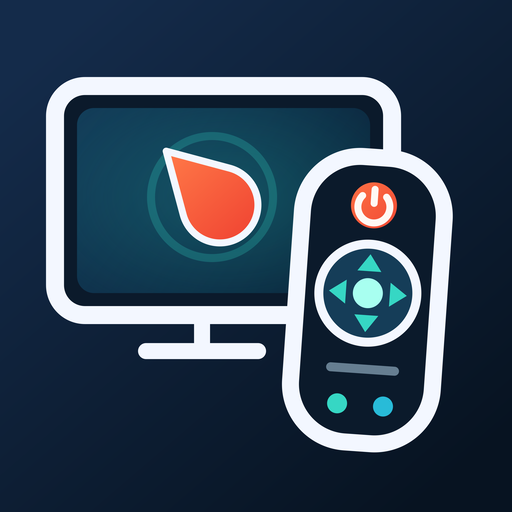
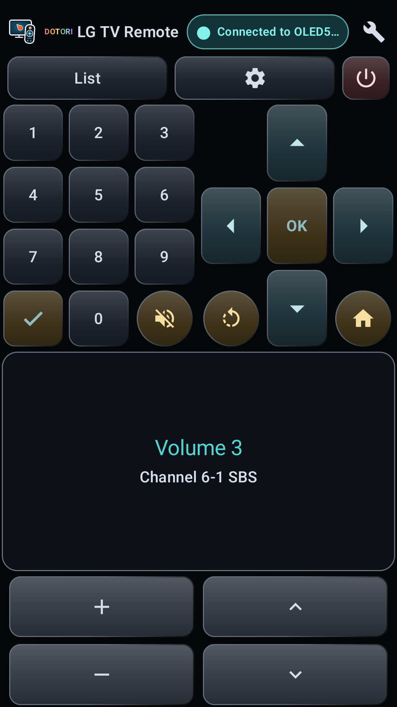
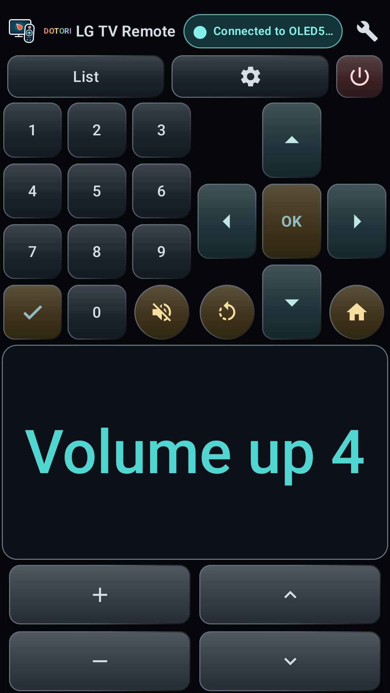
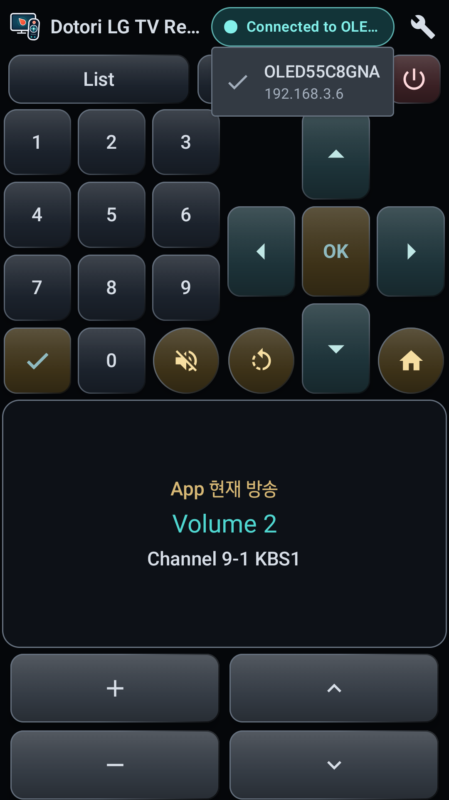
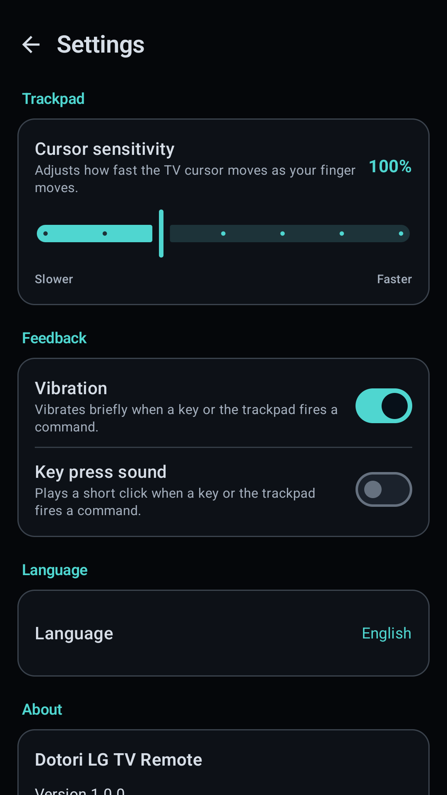
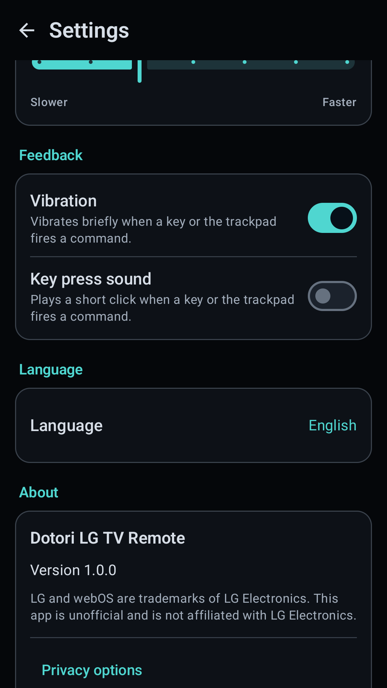
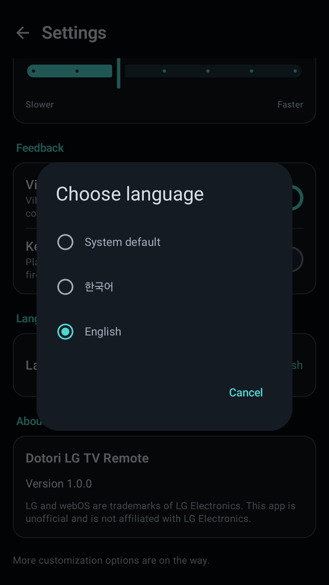

Short answer. Discover the powered-on TV with SSDP, read its device description, and ask the user to approve the first SSAP registration on the TV screen. Store the returned client key and the TV's wired or Wi-Fi MAC address. SSAP controls state; a separate pointer WebSocket carries movement and button frames. After deep standby the TV answers nothing, so power-on must use Wake-on-LAN with the MAC saved while it was awake.

Dotori LG TV RemoteUses the home network for a trackpad, number pad, navigation, volume and channel controls, TV selection, and Wake-on-LAN power-on.
Discovery works only while the TV is reachable
While the TV is on, an SSDP search can return a device-description URL. Fetching that local UPnP description yields the model and, on the measured TV, wired and Wi-Fi MAC addresses. Do not treat the DHCP address as a permanent identity: the IP can change, while the saved device record and certificate fingerprint identify the TV across reconnects.
The MAC is not optional bookkeeping. It is the information required later, when there is no discovery response to ask for it.
The first connection requires approval on the TV
SSAP runs over a secure WebSocket. The phone sends a registration request and the TV displays an approval prompt. Once approved, the TV returns a client key. Store that key per TV so later connections can register without showing the prompt again. A remembered TLS certificate fingerprint also prevents a different endpoint from silently replacing the paired TV.
Control and pointer input use different sockets
The main SSAP connection handles requests and subscriptions: volume, mute, current channel,
foreground application, app launch, and power-off. Pointer input begins with an SSAP request for
getPointerInputSocket, which returns a separate secure WebSocket URL.
type:move
dx:12
dy:-4
down:0
type:button
name:HOMEThe pointer socket carries newline-delimited frames for move, click, scroll, and remote buttons. It does not return a result for each frame. A main SSAP connection can still look alive after the pointer socket has stopped being useful, so a robust reconnect re-establishes both rather than trusting one status indicator.
Power-off and power-on are different protocols
Power-off is an authenticated SSAP command: ssap://system/turnOff. Immediately after
that command, the TV may spend a short time in Active Standby and still answer on its control
port. Once it reaches deep standby, the measured TV closes SSAP and stops answering ping, SSDP,
and UPnP. A powered-off TV therefore cannot be newly discovered.
Power-on uses a Wake-on-LAN magic packet sent to the stored MAC address. The TV's “Mobile TV On” setting must already be enabled. Wired and Wi-Fi interfaces have different MAC addresses, so the address saved from the actual connection matters. Waking the measured TV took about 15–20 seconds; the phone should show progress instead of declaring an immediate failure.
Why text input is not promised
SSAP text insertion worked in the measured webOS browser address field, but the YouTube search field did not participate in the system remote-keyboard path and ignored the same input. The pointer protocol also did not accept a text frame. A feature that works in one TV app and silently fails in another is not a reliable v1 promise, so this remote deliberately omits text input.
The measured boundary
These protocol observations were measured on an LG OLED55C8GNA (2018, webOS 4.x). Other model years can expose different commands or behavior. LG and webOS are LG Electronics trademarks; this is an independent app and is not affiliated with LG Electronics.
Remote, volume, TV picker, and settings screens






Dotori LG TV Remote combines SSDP discovery, approved SSAP pairing, a separate pointer channel, and saved-MAC Wake-on-LAN in one phone remote. More about Dotori LG TV Remote

Related notes
- Dotori LG TV Remote user manual
- Finding devices on your Wi-Fi from an Android phone
- Lost Your LG TV Remote? Use Your Phone Instead — a hands-on walkthrough of the first-time setup.
- LG TV 리모컨 분실·고장, 폰을 리모컨으로 쓰는 방법 — the same walkthrough in Korean.